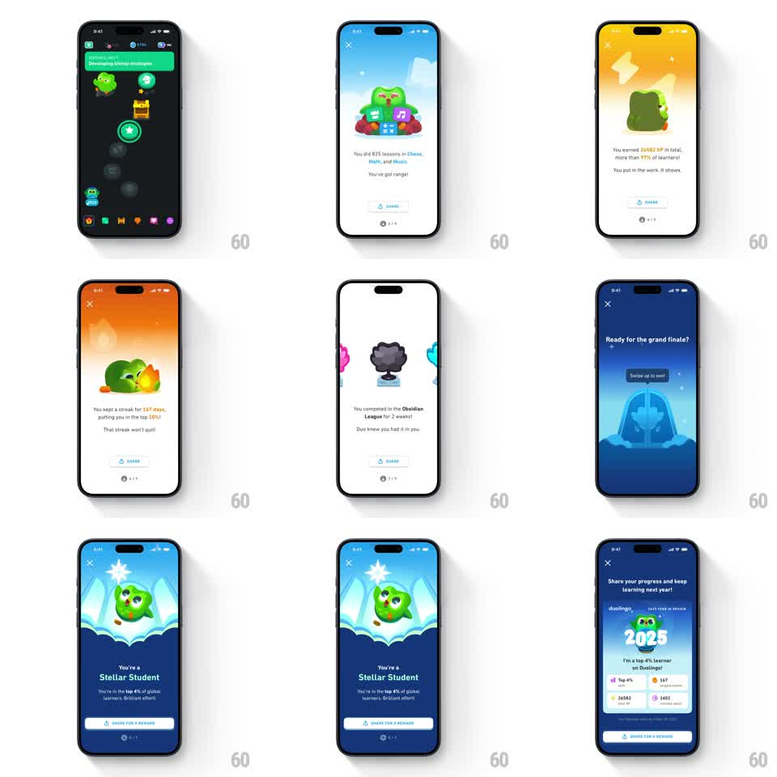

Media
Frame-by-frame

Rebuild this animation 1:1: Duolingo's 2025 year-in-review story - a paged vertical recap where each stat page gets its own mascot gag (Duo juggling subject icons, Duo with a streak flame, league trophy, frozen crystal reveal), ending on a "You're a Stellar Student" award page and a share sheet with the year's stats.

Rebuild this animation 1:1: Duolingo's 2025 year-in-review story - a paged vertical recap where each stat page gets its own mascot gag (Duo juggling subject icons, Duo with a streak flame, league trophy, frozen crystal reveal), ending on a "You're a Stellar Student" award page and a share sheet with the year's stats.
## Integration
Integration: stack-agnostic spec - springs given as stiffness/damping, timed motions as duration + curve; map every value to your framework and animation library of choice.
## Scene
A sequence of full-screen story pages, each with a close (x) top-left, a stat blurb under the mascot, a SHARE button, and a page dot indicator (2 of 8, etc.): (1) dark chess-path intro with Duo icons and a progress track; (2) light blue "You did 825 lessons in Chess, Math, and Music. You've got range!" - Duo juggling three subject cubes; (3) orange "You earned 26582 XP in total, more than 97% of learners!"; (4) orange-red "You kept a streak for 167 days, putting you in the top 10%!" - Duo beside a flame; (5) white "You competed in the Obsidian League for 2 weeks!" - obsidian trophy between league color splashes; (6) dark blue "Ready for the grand finale?" with a "Swipe up to see!" pill over a silhouetted gate; (7) blue "You're a Stellar Student" - Duo bursting out of an ice crystal with a star; (8) share sheet "Share your progress and keep learning next year!" with a duolingo 2025 YEAR IN REVIEW card ("I'm a top 4% learner on Duolingo!"), four stat chips, and a SHARE FOR A REWARD button.
## Motion spec
Pattern: paged story with per-page mascot vignettes and vertical parallax transitions, ~8 pages.
- Page transitions: swipe (or auto-advance) moves pages vertically; the outgoing page slides up and scales to ~0.92 while the incoming page rises from below (450ms, ease-out), background colors cross-fading.
- Mascot entrance per page: Duo springs in (scale 0.6 -> 1, spring ~300/15) with its prop a beat later (150ms delay).
- Idle gags: juggled cubes loop in a circle (~1.2s cycle), the streak flame flickers (scale 1 -> 1.06, 400ms alternate), the crystal reveal plays a one-shot crack + star pop (500ms).
- Grand finale gate: the "Swipe up to see!" pill bobs (8px, 1.2s) until the gesture; swipe-up flings the gate page away (spring ~240/18).
- Share sheet: the recap card tilts in (rotate 6deg -> 0, spring ~260/16) and stat chips pop in a row (100ms stagger).
## Calibration
- Each page owns one background color and one gag - do not reuse vignettes across pages.
- The finale is gated on the swipe gesture; never auto-advance past page 6.
## Reduced motion
Pages cross-fade (250ms) with no parallax scale; mascots appear static; the finale still requires the swipe but without the fling.
## Don't miss
- The page dots and per-page SHARE button stay fixed while content moves.
- The share card copy is exact: "I'm a top 4% learner on Duolingo!" with duolingo 2025 YEAR IN REVIEW branding.